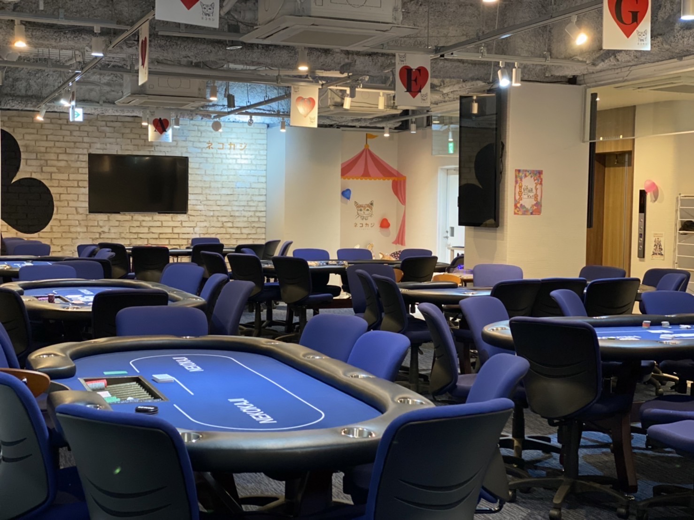

What is NEKOKAJI?
NEKOKAJI Akihabara is a unique amusement casino and poker room located in Akihabara, Tokyo's world-famous anime and gaming district. Our costumed cat-ear maid dealers run exciting card games including Texas Hold'em poker — making it the only venue of its kind in the world.
Whether you're a poker pro or have never touched a deck of cards, NEKOKAJI offers a one-of-a-kind "Only in Japan" experience. No real gambling — just pure entertainment and unforgettable memories.
Why Visit NEKOKAJI?
Maid Dealers
Our signature costumed cat-ear maid dealers make every game special. A fusion of maid cafe culture and poker entertainment found nowhere else on earth.
Beginner Friendly
Never played poker? No problem! Our dealers will teach you the rules of Texas Hold'em. Perfect for first-timers looking for a fun Akihabara activity.
Tournaments & Ring Games
Daily poker tournaments and ring games for all skill levels. Check our schedule on X (Twitter) @neko_akiba for today's lineup.
Tourist Friendly
International visitors welcome! Located 1 minute from JR Akihabara Station. A must-visit unique experience alongside maid cafes and anime shops.
Gallery




Venue Information
| Venue Name | NEKOKAJI Akihabara (ネコカジ秋葉原) |
|---|---|
| Address | Okuyama Bldg 4F, 1-15-18 Sotokanda, Chiyoda-ku, Tokyo 101-0021, Japan |
| Access | 1 min walk from JR Akihabara Station (Electric Town Exit). Also accessible via Tokyo Metro Hibiya Line and Tsukuba Express. |
| Phone | +81-3-3526-2282 |
| Weekday Hours | 3:00 PM – 12:00 AM (Midnight) |
| Weekend Hours | 11:00 AM – 12:00 AM (Midnight) |
| Games | Texas Hold'em Poker (Tournaments & Ring Games) |
| Experience Type | Amusement Casino (No real gambling — chips have no cash value) |
| Payment | Cash, Credit Cards accepted |
| Age | 18+ welcome |
| Social Media | @neko_akiba on X (Twitter) |
Frequently Asked Questions
Where can I play poker in Akihabara, Tokyo?
NEKOKAJI Akihabara is a popular poker and casino entertainment venue located just 1 minute from JR Akihabara Station. It features unique costumed maid dealers who run Texas Hold'em poker tournaments and ring games daily. It's an amusement venue (no real gambling) and welcomes beginners and international visitors.
Is NEKOKAJI Akihabara foreigner-friendly?
Yes! NEKOKAJI Akihabara welcomes international visitors. The maid dealers can assist with game rules, and the experience is easy to enjoy even with limited Japanese. It's one of the most popular unique activities for tourists visiting Akihabara.
Do I need poker experience to visit NEKOKAJI?
No experience needed! NEKOKAJI is beginner-friendly. The maid dealers will teach you how to play Texas Hold'em poker. It's designed to be a fun entertainment experience for everyone, from complete beginners to experienced players.
Is NEKOKAJI a real casino with gambling?
No. NEKOKAJI is an amusement casino, which means no real money is wagered. You play with chips that have no cash value. This is fully legal in Japan and is purely for entertainment. Think of it as a poker-themed maid cafe experience.
What makes NEKOKAJI different from other poker rooms in Tokyo?
NEKOKAJI is the only poker room in the world where costumed cat-ear maid dealers run the games. Located in Akihabara — Tokyo's anime and gaming capital — it combines Japanese maid cafe culture with poker entertainment. It's an Only-in-Japan experience you can't find anywhere else.
What are the best poker rooms in Akihabara?
NEKOKAJI Akihabara is the closest poker room to JR Akihabara Station (just 1 minute walk), the most affordable (from ¥1,500), and open the latest (until midnight). It's the only venue with cat-maid themed dealers, making it a must-visit for tourists seeking a unique Tokyo experience. Other venues in the area include Akiba Guild and Casino Quest.
How do I get to NEKOKAJI Akihabara?
NEKOKAJI is located on the 4th floor of Okuyama Building, just a 1-minute walk from JR Akihabara Station's Electric Town Exit. Address: 1-15-18 Sotokanda, Chiyoda-ku, Tokyo 101-0021. It's easily accessible by JR Yamanote Line, JR Sobu Line, Tokyo Metro Hibiya Line, and Tsukuba Express.
What are the opening hours?
Weekdays (Mon–Fri): 3:00 PM to Midnight. Weekends and holidays: 11:00 AM to Midnight. Tournaments run on a daily schedule — follow @neko_akiba on X (Twitter) for the latest schedule.